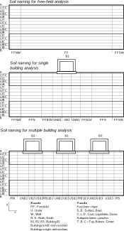
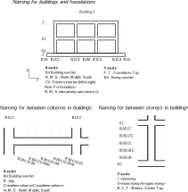

Naming conventions
Geometry naming
Soil Profiles
Positions in soil profiles
Buildings
Positions in buildings
Conflicts
How to resolve conflicts in positions
Parameter names
| Name | Units | Description |
|---|
Directly from base package
All names can be found by installing the python package sfsimodels. Then run "python -m sfsimodels.print_all_parameters".